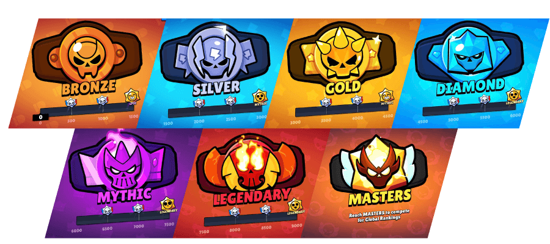

La Ranked di Brawl Stars 2026 è la modalità competitiva ufficiale del gioco. I giocatori affrontano partite 3v3 utilizzando draft, ban e mappe competitive ufficiali. Vincendo le partite si guadagnano punti rank per salire dalle leghe più basse fino alla Masters.
Ogni stagione ranked cambia meta e mappe. Nelle leghe alte il matchmaking diventa molto più competitivo e la coordinazione del team è fondamentale. I giocatori devono conoscere draft, counterpick e modalità per riuscire a vincere con continuità.
La Ranked è anche il punto di partenza per molti giocatori competitivi: i migliori team utilizzano questa modalità per allenarsi prima dei tornei ufficiali del Championship.
